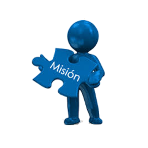

MISION
La mision de Rapanet , se focaliza en la creacion y gestion de servicios de indole operativa en una Eps ,
orientados principalmente a la captacion de la informacion de los formularios fisicos de los usuarios y su posterior
procesamiento en nuestro sofware.
Ofrecemos soluciones diferenciadas en areas como afiliaciones , cartera , recaudos con las que buscaremos cubrir las
necesidades tecnologicas de cualquier entidad de salud.
Buscamos poder ofrecer servicios de alto valor añadido y confiables, en los que nuestro sofware estara presto a
su entera disposicion para ayudarle en todo momento.
Con nuestra sofware siempre tendra un manejo de la informacion de forma consistente y eficiente , disponiendo siempre de
la flexibilidad adecuada a sus necesidades. En un entorno en el que cada vez existe mas competencias,
nuestra sofware siempre le acompañara buscando el camino de la agilizacion de sus procesos y fiabilidad de su
informacion.

 Sofware Operacional Eps
Sofware Operacional Eps